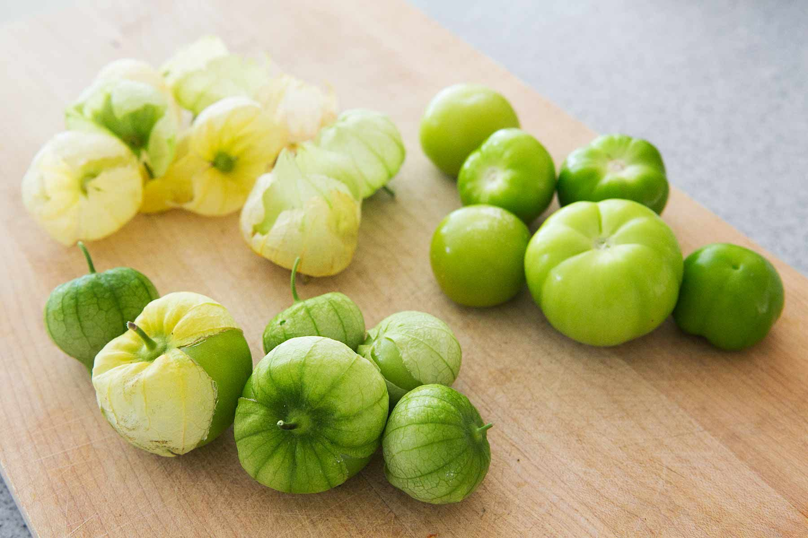

Veggies es bonus vobis, proinde vos postulo essum magis kohlrabi welsh onion daikon tomatillo tatsoi melon azuki bean garlic. 
Turnip greens yarrow ricebean rutabaga endive cauliflower sea lettuce kohlrabi amaranth water spinach avocado daikon napa cabbage asparagus winter purslane kale. Celery potato scallion desert raisin horseradish spinach carrot soko. Lotus root water chickpea fennel kombu maize bamboo shoot green bean swiss chard seakale pumpkin onion gram corn pea. Brussels sprout coriander water chestnut gourd swiss chard wakame kohlrabi beetroot carrot watercress. Corn amaranth salsify bunya nuts nori azuki bean chickweed potato bell pepper artichoke.